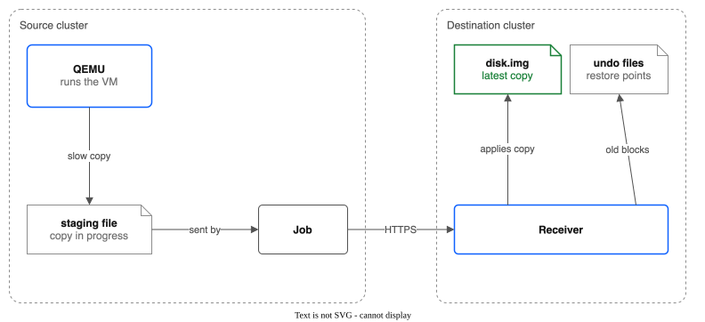

Part 12: Replicating Running VMs¶
Tutorial Series: Index | Part 6: Replication and Failover | Part 12 | Part 13: Failover of Running VMs
Copy a running VM with all its disks to a second cluster, while the VM keeps running. Check that every copy shows one moment for all disks, and see which copies are file-system consistent. The words moment, restore point, change list and receiver are defined in CONTEXT.md.
Time: about 1 hour, most of it waiting for the first copy. Status: Experimental. Read CROSS-REGION-DR.md, "Running VM disks", for the design and the lab results.
How it works, in short:
- The controller freezes the guest file systems for a moment. QEMU (the program that runs the VM) starts a copy of every disk of the VM at that one moment. The guest thaws.
- QEMU writes the copy slowly, 20 MB/s for each disk by default, so the VM keeps its speed.
- A Job sends the copy to the receiver on the destination cluster. The receiver applies it.
- QEMU keeps a change list. The next copy holds only the blocks that changed.
- Before the receiver changes a block, it saves the old contents in an undo file. The undo files are restore points.

Prerequisites¶
- Two clusters, with the driver on both: the source (where the VM runs) and the destination (the DR cluster). The clusters reach each other over HTTPS. The source cluster needs no NFS route to the destination.
- A running VM on a pool StorageClass on the source cluster, with the guest agent (
qemu-guest-agent) running. Without the guest agent, copies are crash consistent. oc,helm,jq,openssl,virtctl, and the repository checkout (for the chart). Use the chart from the same release as the driver image that runs on the destination cluster.- The source nodes must be able to reach the receiver's address on the destination cluster. The address is a Route on the destination cluster's ingress, which on ROKS and ROVS is a public address, so the nodes need outbound internet access.
- A pool on the destination cluster with room for the receiver volume (Step 1) and a pool zone that exists on the destination cluster.
Set the names. This tutorial calls the VM my-vm in the namespace vms and the source pool vm-pool:
export SRC_KUBECONFIG=~/.kube/source-config
export DR_KUBECONFIG=~/.kube/dr-config
export NS=vms
export VM=my-vm
export SRC_POOL=vm-pool
export DR_POOL=dr-vm-pool
src() { oc --kubeconfig "${SRC_KUBECONFIG}" "$@"; }
dr() { oc --kubeconfig "${DR_KUBECONFIG}" "$@"; }
Check the VM on the source cluster:
src get vmi -n ${NS} ${VM} -o jsonpath='{.status.phase}{" agent="}{.status.conditions[?(@.type=="AgentConnected")].status}{"\n"}'
Expected: Running agent=True.
Step 1: Make the destination pool and the receiver volume¶
On the destination cluster, make a pool. The receiver runs as UID 107, the same user as QEMU. Give the pool the same owner, so a failed-over VM can open its disk.
export ZONE=$(dr get nodes -o jsonpath='{range .items[*]}{.metadata.labels.topology\.kubernetes\.io/zone}{"\n"}{end}' | sort | uniq -c | sort -rn | awk 'NR==1{print $2}')
cat <<EOF | dr apply -f -
apiVersion: storage.ibmcloud.io/v1alpha1
kind: FileSharePool
metadata:
name: ${DR_POOL}
spec:
zone: ${ZONE}
profile: dp2
shareSizeGB: 500
iops: 3000
maxShares: 1
initialShares: 1
autoExpand: false
defaultUID: 107
defaultGID: 107
defaultPermissions: "0777"
EOF
dr get filesharepool ${DR_POOL}
Wait for Ready. The receiver needs a volume that is big enough for all the disks you replicate, plus room for restore points:
cat <<EOF | dr apply -f -
apiVersion: v1
kind: PersistentVolumeClaim
metadata:
name: repl-destination-data
namespace: kube-system
spec:
accessModes: [ReadWriteMany]
storageClassName: ${DR_POOL}
resources:
requests:
storage: 200Gi
EOF
Step 2: Start the receiver¶
Make a token. Both clusters need it.
export REPL_TOKEN=$(openssl rand -hex 32)
dr create secret generic repl-receiver-token -n kube-system --from-literal=token="${REPL_TOKEN}"
Enable the receiver on the destination cluster. Use the release name and chart path of your install:
helm upgrade ibm-vpc-file-pool-csi charts/ibm-vpc-file-pool-csi \
--kubeconfig ${DR_KUBECONFIG} -n kube-system --reuse-values \
--set replicationReceiver.enabled=true \
--set replicationReceiver.pvcName=repl-destination-data \
--set replicationReceiver.authSecretName=repl-receiver-token \
--set replicationReceiver.tls.enabled=true
The receiver writes whole disks through NFS. Pages of files on NFS count against the container's memory limit, so the memory use of a busy receiver stays near the limit; that is normal, because the kernel drops the pages as it needs room. The receiver forces its data out every 32 MiB and drops the cached pages, and the default limit is 1Gi (see HELM-VALUES.md). Older versions with a 512Mi limit were killed (OOMKilled) during the first copy of an 11 GiB disk.
The chart makes a Deployment, a Service, a TLS certificate (it needs cert-manager) and, on OpenShift, a Route.
No cert-manager? A new ROKS or ROVS cluster has none, and the command above then fails with no matches for kind "Certificate" in version "cert-manager.io/v1" (nothing is changed). Use the Route's TLS instead: set --set replicationReceiver.tls.enabled=false. The Route then ends the TLS with the cluster's ingress certificate, which is signed by a public CA. The source trusts it without a CA Secret, so skip the repl-receiver-ca Secret below and leave destinationCACertSecretRef out of the policy in Step 3. See Part 6, Step 6c.
Check the receiver and get the address:
dr get pods -n kube-system -l app.kubernetes.io/component=replication-receiver
export RECEIVER_HOST=$(dr get route -n kube-system -l app.kubernetes.io/component=replication-receiver -o jsonpath='{.items[0].spec.host}')
echo https://${RECEIVER_HOST}
Expected: one pod 1/1 Running, and a host name.
Copy the token (and, if the receiver has its own certificate, the CA certificate) to the source cluster:
# Only with the receiver's own certificate (cert-manager):
dr get secret ibm-vpc-file-pool-csi-receiver-certs -n kube-system -o jsonpath='{.data.ca\.crt}' | base64 -d > /tmp/receiver-ca.crt
src create secret generic repl-receiver-ca -n kube-system --from-file=ca.crt=/tmp/receiver-ca.crt
# Always:
src create secret generic repl-source-token -n kube-system --from-literal=token="${REPL_TOKEN}"
(base64 -d is base64 -D on older macOS.)
Step 3: Make the replication policy¶
On the source cluster, make a policy for the pool that holds the VM disks. The policy copies every volume of the pool. To copy only some, add subVolumeSelector (see Part 6).
cat <<EOF | src apply -f -
apiVersion: storage.ibmcloud.io/v1alpha1
kind: ReplicationPolicy
metadata:
name: vm-to-dr
spec:
sourcePoolName: ${SRC_POOL}
destinationEndpoint: https://${RECEIVER_HOST}
destinationAuthSecretRef: repl-source-token
destinationCACertSecretRef: repl-receiver-ca # leave this line out if the Route provides the TLS
destinationBasePath: /repl
schedule: 15m
maxRetries: 3
maxParallelSyncs: 2
vmCopySpeedLimitMBps: 20
restorePointKeepHours: 24
EOF
The fields that matter for a VM:
vmCopySpeedLimitMBpslimits each disk copy. At 20 MB/s a VM kept 93% of its write speed in a lab test. The limit also counts empty space, so a first copy of a large disk takes long.0means no limit.restorePointKeepHoursis how long the destination keeps earlier moments. It is24by default. The disk uses more space the more the VM writes.scheduleis how often a new copy starts.
Step 4: Watch the first copy¶
src get replicationpolicy vm-to-dr
src get replicationpolicy vm-to-dr -o json | jq -c '.status.subVolumeStatuses[] | {sv: .subVolumeName[0:16], phase: .vmCopy.phase, moment: .copyMoment, consistency, err: .lastError}'
The phase of a copy is Copying while QEMU writes the staging file, and Sending while a Job applies it at the destination. The first copy is a full copy. At 20 MB/s, a 20 GB disk needs about 17 minutes, and a 100 GB disk about 1.5 hours.
Expected after the first copy: every disk of the VM has the same copyMoment, consistency is FileSystemConsistent, and vmCopy is empty.
Plan on this: in a lab test, a 12 GiB root disk and a 2 GiB data disk took 10 minutes to copy at 20 MB/s, and 4 more minutes to send. The first status can appear several minutes after you create the policy.
If a copy fails, the status shows it:
lastErrorof the disk saysapply Job failed for <volume> (<reason>), for example when the receiver was restarted during the upload. The next cycle starts a new copy by itself. A receiver that was killed while it stored records cuts away the damaged end of its upload record, and the Job resumes. You do not need to clean up. To see why a Job failed, read the log of its pod while it runs:src logs -n kube-system <pod>.
consistency can also be CrashConsistent. Then consistencyReason says why, for example that the guest agent did not answer. A VM that starts from a crash consistent copy may need a file-system check, as after a power loss.
Step 5: Watch an incremental copy and the restore points¶
Write something in the guest, and wait for the next cycle (15 minutes):
KUBECONFIG=${SRC_KUBECONFIG} virtctl ssh -n ${NS} cloud-user@vmi/${VM} -c 'head -c 50000000 /dev/urandom | sudo tee /var/tmp/big >/dev/null; sync'
src get replicationpolicy vm-to-dr -o json | jq -c '.status.subVolumeStatuses[] | {sv: .subVolumeName[0:16], moment: .copyMoment, bytes: .bytesSynced, points: .restorePoints, oldest: .oldestRestorePoint}'
Change cloud-user to the user of your guest image. Set the cluster with the KUBECONFIG variable, as above. With virtctl ssh --kubeconfig ... the connection helper reads the default kubeconfig instead, and the command fails with virtualmachineinstance ... "my-vm" not found. If ssh says Too many authentication failures, add -i <key> -t "-o IdentitiesOnly=yes".
Expected: the second copy sends far less than the disk size (about the 50 MB you wrote, plus whatever the guest wrote). restorePoints is now 1, and oldestRestorePoint is the first moment. Each further copy adds a restore point, until restorePointKeepHours passes.
What changes a copy¶
- Live migration of the VM cancels the copy.
- A restart or a move of the VM loses the change list. The next copy sends only the blocks that differ from the destination disk.
- A hot-plugged disk is skipped.
- A snapshot of the VM at the same time makes the copy wait. Copies and snapshots of one VM take turns.
- A stopped VM is copied as a folder, as a plain volume is. A stopped VM whose disk has instant snapshots is not copied (see Part 11).
- A running VM that has instant snapshots gets a full copy after each snapshot.
See it in the console¶
Open the replication policy page. For each disk, it shows the moment of the last copy and whether it is file-system or crash consistent. It also shows the restore points and the phase of a copy in progress. See Part 8.
Clean up¶
On the source cluster:
src delete replicationpolicy vm-to-dr
src delete secret -n kube-system repl-receiver-ca repl-source-token --ignore-not-found
Delete the temporary objects of a policy if any are left (the controller removes them when a copy ends). Use the policy name, because other policies have temporary objects too:
src delete jobs,pvc -n kube-system -l storage.ibmcloud.io/repl-policy=vm-to-dr --ignore-not-found
src delete pv -l storage.ibmcloud.io/repl-policy=vm-to-dr --ignore-not-found
On the destination cluster, keep the receiver and the data if you go on to Part 13. To remove them:
helm upgrade ibm-vpc-file-pool-csi charts/ibm-vpc-file-pool-csi --kubeconfig ${DR_KUBECONFIG} -n kube-system --reuse-values --set replicationReceiver.enabled=false
dr delete pvc -n kube-system repl-destination-data
dr delete secret -n kube-system repl-receiver-token
dr delete filesharepool ${DR_POOL}
What you learned¶
- A policy copies a running VM at one moment for all disks, and sends only changed blocks after the first copy.
- The status says which moment a copy shows and how consistent it is.
- The destination keeps restore points so you can start the VM from an earlier moment.